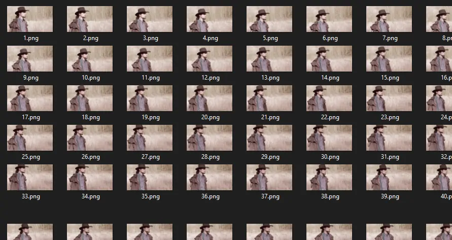
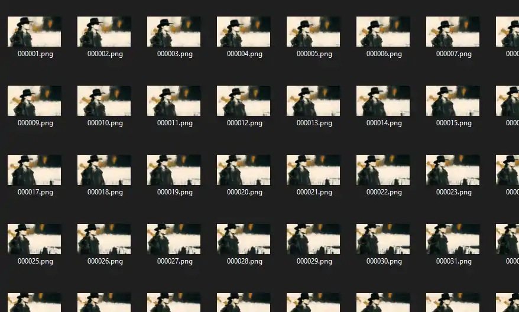

Intro
A tool I liked to use in the past and that I almost forgot about, is EbSynth. If you don’t know it, EbSynth is an amazing piece of software, that synthesizes art into your videos.
Basically, it works like this: you split your video into frames and then edit a keyframe to your liking. The software then draws the keyframe over the remaining frames of the video. The whole thing is based on optical flow. The video content must have clearly defined edges and colors for this to work best.
Go and get it from their website. The beta is still free to use, even for commercial purposes: https://ebsynth.com/
In the following, I show you how to use EbSynth to create a piece of moving art from a simple video.
How to
Short overview
- split video into frames
- choose a keyframe
- edit keyframe
- synth video with EbSynth
- convert synthed frames back into video
Extract frames from video using ffmpeg
For my video, I chose a framerate of 15 fps. It gives the whole video a feeling of a handdrawn stop motion animation. To split the video into keyframes, I use a simple ffmpeg command. This gives me 15 .png files per every second of video. %03d enumerates the frames from 1 - 999. Because I know approximately how many fames I will get, I know that will be enough. Things of interest:
ffmpeg -r 15 -i "[video].mp4" "frames\frame-%03d.png"
Now you have a lot of images to work with:

Choosing and editing the keyframe
When first using EbSynth, you may find yourself in the situation, that you don’t know which frame you should choose for your keyframe. In the FAQ on EbSynth’s website, they give you a little help. Start with the first keyframe and synth the video. Watch the video and notice the time, when things start to get weird and don’t look as expected. This exact moment is your next keyframe. Take the synthed frame and change it to your liking in an editing software of your choice, then proceed with the new keyfarme.
I personally like the little drag effects/artefacts that can happen with EbSynth. I take my video shot and choose the frame, which has the most and most important information in it. Since EbSynth can synth forward and backward, it’s no problem if your keyframe is e.g. frame-255 and you synth your video from frame-001 to frame-500.
In this example, I chose the first frame for my keyfarme, because you can clearly see the full character. The backgroud is less important here. I edited the image to get a washed out, old paper like look:

Running EbSynth

In EbSynth’s gui, you just choose your keyframe and the first of your video frames. After the synthing prozess, you have a folder full of synthed frames:

Converting frames back into a video
For detailled information about this topic, you can read this post from Hammad Mazhar.
To get a well formatted H.264/MPEG-4 video, that most players and editing programs can open, I use the following command. You can play with the compression rate (crf) to get the desired result. Lower compression value results in better quality and bigger files.
ffmpeg -r 15 -f image2 -s 1920x1080 -i %03d.png -vcodec libx264 -crf 25 -pix_fmt yuv420p test.mp4
Result
Here is the original video compared to the final result: